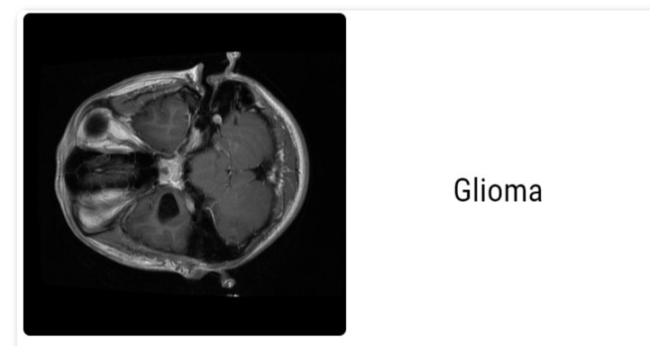

There are more than 120 different types of brain tumors, lesions and cysts, which are differentiated by where they occur and what kinds of cells they are made of. As you can see this website can classify 3 types of brain tumors based on the location of tumor.
After Signin upload Contrast Enhanced T1 weighted MRI images to know what kind of tumor is present.
